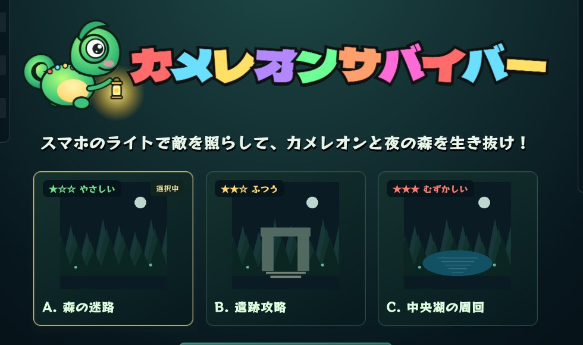
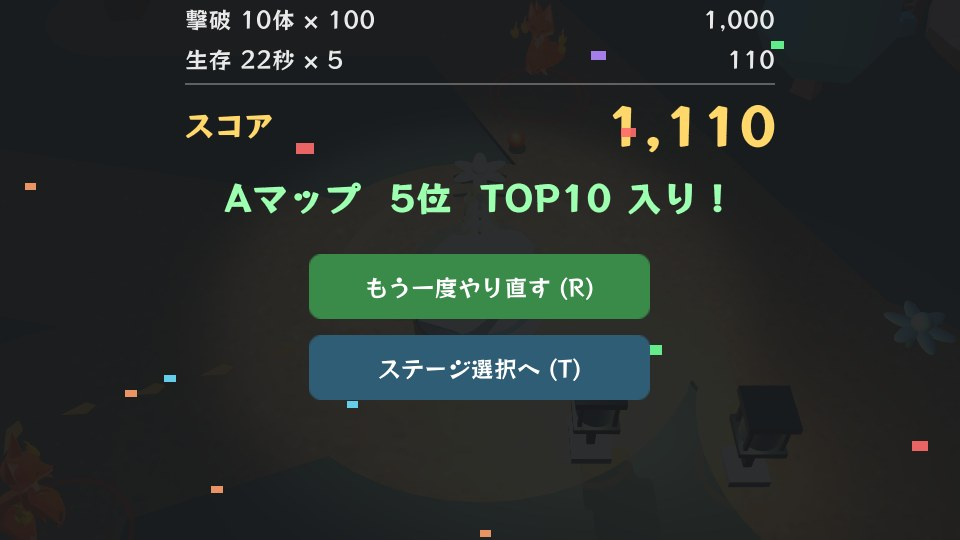

1. 表紙 ★約15秒
こんにちは。これから「カメレオンサバイバー」の遊び方を説明します。このゲームは、スマホのライトで敵を照らして、カメレオンと一緒に夜の森を生き抜くゲームです。
こんにちは。これから「カメレオンサバイバー」の遊び方を説明します。このゲームは、スマホのライトで敵を照らして、カメレオンと一緒に夜の森を生き抜くゲームです。

役は2つあります。1つ目はカメレオン役。1人で、足元のマットを踏んでカメレオンを動かします。2つ目は灯り役。最大7人まで参加できて、自分のスマホが懐中電灯になります。森はまっ暗で、照らした所しか見えません。カメレオン役が進み、灯り役が照らして守る。みんなで協力して森から脱出します。
マットとスマホを手で示しながら話す

ゴールは、蛍を2匹集めて、門から脱出することです。まず、森にある石をライトで照らします。すると蛍が集まってきます。次に、カメレオンが石にさわると、蛍をゲットできます。石は2か所あります。2匹そろうとスタート地点の門が開くので、門をくぐれば脱出成功です。

カメレオン役の人は、マットを踏んだ方向に歩きます。前・後ろ・左・右の4枚です。2枚いっしょに踏むと、ななめに進めます。頭の上の緑のバーが体力です。これが0になるとゲームオーバーなので気をつけてください。
実際にマットを1回踏んで見せる

カメレオンにはひみつ技があります。それが擬態です。1秒止まると、地面と同じ色になって隠れます。隠れている間はダメージを受けません。敵はカメレオンを見失って「はてな」を出します。ただし、続くのは最大3秒。水色のバーがなくなると見つかってしまいます。歩いているとバーはまたたまります。

灯り役の人は、ゲーム画面のQRコードをスマホのカメラで読むだけです。アプリは要りません。「タップして始める」を押したら、スマホを傾けて光を動かします。光がつくのは、「ライトON」を押している間だけです。iPhoneの人は、確認が出たら「許可」を押してください。光がずれたときは「中心をリセット」を押します。
自分のスマホを傾けて、画面の光が動く様子を見せる

敵が来たら、光を当て続けてください。赤い輪が出て、だんだん弱って倒れます。何人かで同じ敵に光を重ねると、そのぶん早く倒せます。光を外しても、敵の体力は元に戻りません。倒した敵はときどき緑の玉を落とします。カメレオンが拾うと体力が回復します。

敵は4種類です。狼は小さくて速く、3匹で群れて来ます。狐は遠くから火の玉を投げてきます。熊は大きくてゆっくりですが、かたくてパンチが痛いです。妖精は木や崖をすり抜けて、まっすぐ向かってきます。そのかわり弱いです。

森には味方になってくれるものが3つあります。1つ目は導きの花。照らすと、蛍のいる石まで光の道が出ます。迷ったら花を探してください。2つ目はランタン。そのまわりに来た敵は弱っていきます。3つ目は雷。12秒くらいごとに「ゴロゴロ」と鳴ったあと、森全体が光って、近くの敵にダメージを与えます。

気をつけてほしいことがあります。蛍を捕まえたり、体力を回復したりすると、「敵が増えた！」と出て、敵がどんどん増えていきます。後半ほど大変になるので、灯り役のチームワークが大事です。

マップは3つあります。A「森の迷路」がやさしい、B「遺跡攻略」がふつう、C「中央湖の周回」がむずかしいです。はじめての人はAがおすすめです。脱出できると5000点のボーナス。さらに倒した敵の数と、早く脱出できたかで点数が増えます。途中で力尽きても、倒した数と生きのびた時間で点数がつきます。上位10位までランキングに載ります。
最後に、勝つためのコツを3つ。1つ、囲まれそうになったら止まって擬態。2つ、灯り役は同じ敵に光を重ねる。3つ、迷ったら導きの花を照らす。それでは、QRコードを読んで参加してください。みんなで灯せ、夜の森！
ゲーム画面のQRコードを指さして、参加をうながす